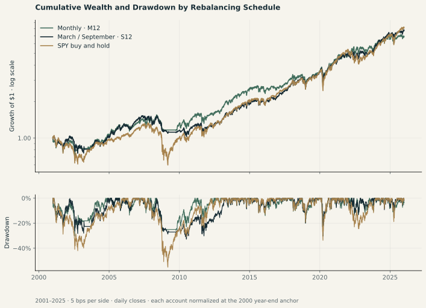
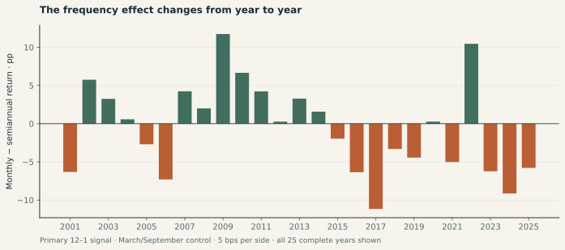
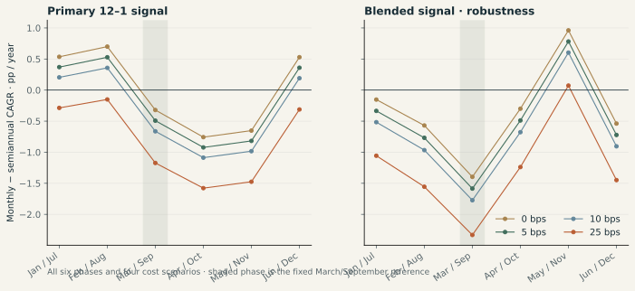

Validation Within the Pilot Scope
Nine sector ETFs plus SPY; 6,987 common sessions from December 22, 1998 through October 2, 2026. The calendar, missing values, input hashes, signal timing, fees and independent accounting replay were checked.
Study 02 · sector ETFs · 2001–2025
In the fixed 2001–2025 comparison, the monthly 12–1 portfolio grew at 8.02% a year versus 8.51% for March/September selection. Monthly trading had a shallower maximum drawdown, and required substantially more trading.
What this answers: selection frequency in a nine-sector-ETF, three-slot strategy under an adjusted-price model. What it does not answer: the original 75-stock, historical-capitalization-weighted SPMO-inspired experiment. That study remains blocked by documented data gaps.

| Portfolio | CAGR | Total return | Max drawdown | Traded NAV / year | Mean cash |
|---|---|---|---|---|---|
| M12 | 8.02% | 587.36% | -30.32% | 5.04× | 8.25% |
| S12-03-09 | 8.51% | 670.10% | -32.81% | 1.86× | 8.08% |
| MMIX | 7.29% | 480.44% | -32.39% | 5.49× | 7.69% |
| SMIX-03-09 | 8.87% | 737.53% | -30.34% | 1.95× | 6.75% |
| SPY | 8.76% | 716.58% | -55.19% | 0.00× | 0.00% |
Traded NAV counts buys plus sells, without dividing by two. Cash earns zero interest. Drawdowns use daily closes. These are retrospective modeled results, not achievable execution records or forecasts.

March/September remains primary. The other five schedules are sensitivity checks, not candidates from which we choose a winner. Every cost level is a separately simulated account.

| Phase | Monthly CAGR | Semiannual CAGR | Difference | Drawdown difference |
|---|
Loading the saved comparison table…
Secondary case · 2026 through October 2
The monthly primary portfolio returned 22.28%, versus 9.29% for March/September: a +12.99 pp difference. This partial year is not annualized, and it does not replace the prespecified 25-year comparison. The blended signal has a different outcome; inspect the complete tables.
Nine sector ETFs plus SPY; 6,987 common sessions from December 22, 1998 through October 2, 2026. The calendar, missing values, input hashes, signal timing, fees and independent accounting replay were checked.
Signals use vendor adjusted closes. Trades use Open × AdjClose / Close. These are total-return proxy units; no separate dividend cash is added. This does not reproduce actual dividend payment dates or raw-share execution.
Three equal-sized slots among the original nine sector ETFs, with empty slots held as cash. Sector definitions changed over time. This is neither the top-75 stock strategy nor a replication of the official SPMO index.
The design was frozen before this execution, after the history was already observable. All phases and costs are published. There is no untouched holdout, statistical significance claim, tax model or validated trading capacity.
Run 20261009T021722928426Z-9e9cb830b3cb · configuration SHA-256 b1236c23038e567b2a7bcfd7a3d9f8cfae195775ba593d054d0e2bb075c88af2
Faster updating is not a free improvement. In the primary long-period comparison it bought a shallower drawdown, but lower compounded growth and more turnover. The sign changes across calendar choices. The strong 2026 primary result therefore supports further investigation, not a broad claim that monthly momentum wins.
Read the complete retrospective